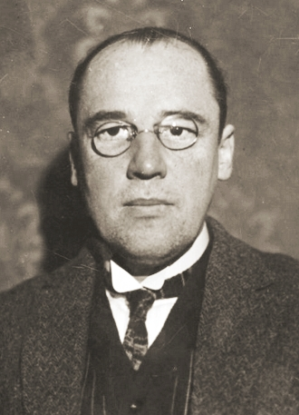
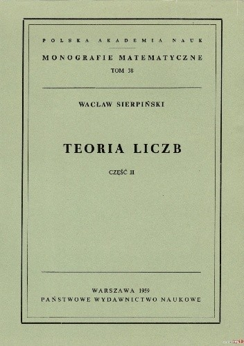

Wacław Sierpiński
Wacław Franciszek Sierpiński (ur. 14 marca 1882 w Warszawie, zm. 21 października 1969 tamże) – polski matematyk, jeden z czołowych przedstawicieli warszawskiej szkoły matematycznej i twórców polskiej szkoły matematycznej. Zajmował się teorią liczb, analizą matematyczną – zwłaszcza analizą rzeczywistą (teorią funkcji zmiennej rzeczywistej) i teorią miary, ogólną i opisową teorii mnogości, topologią mnogościową oraz teorią kategorii. Szczególne znaczenie mają jego prace na temat pewnika wyboru i hipotezy continuum.
"Królową nauk" zainteresował się w warszawskim gimnazjum. Pasję rozwijał studiując matematykę na Cesarskim Uniwersytecie Warszawskim od 1900 roku. Cztery lata później został nauczycielem matematyki. Posadę stracił rok później wskutek represji po przyłączeniu się do strajku szkolnego w czasie rewolucji 1905 roku. Przeniósł się wówczas do Krakowa, w którym polskość była znacznie bardziej akceptowana. Tam kontynuował naukę na Wydziale Filozoficznym Uniwersytetu Jagiellońskiego, gdzie zdobył doktorat. Powrócił do Warszawy w 1906 roku i przez dwa lata uczył w prywatnych szkołach. W 1908 habilitował się na Uniwersytecie Lwowskim. Został profesorem w wieku 28 lat. W 1918 roku przeniósł się na Uniwersytet Warszawski, z którym związał się do końca swojej naukowej aktywności. Podczas wojny polsko-bolszewickiej pracował w Wydziale Szyfrów Sztabu Głównego i przyczynił się do złamania przez Stefana Mazurkiewicza szyfru bolszewików. W dwudziestoleciu międzywojennym kontynuował karierę naukową. Był przeciwnikiem sanacyjnej ustawy jędrzejewiczowskiej, która ograniczała autonomię uniwersytetów. W czasie niemieckiej okupacji nauczał na zajęciach konspiracyjnego uniwersytetu, co karane było śmiercią. W tym czasie otrzymał propozycję objęcia katedry na madryckim uniwersytecie w bezpiecznej, neutralnej Hiszpanii. Odmówił. Po wojnie powrócił do pracy na uczelni. Przez dwie dekady był prezesem Warszawskiego Towarzystwa Naukowego, a po jego likwidacji został jednym z trzech wiceprezesów Polskiej Akademii Nauk.Był jednym z sygnatariuszy Listu 34, który sprzeciwiał sie cenzurze w PRL. Pod groźbą represji wycofał jednak później swoje poparcie dla tej inicjatywy. Zmarł 9 października 1969. Pozostawił po sobie 720 prac oryginalnych, 107 artykułów i przemówień, 57 książek i broszur i 7 podręczników szkolnych. Cieszył się autorytetem w całej Europie. Tytułem profesora honoris causa obdarzyły go uniwersytety m.in. we Francji, Czechosłowacji, ZSRR. Międzynarodowa Unia Astronomiczna postanowiła upamiętnić matematyka nazywając jego imieniem krater na Księżycu.
{kind=link}
{kind=link}